[竹北] 善菓堂
| 餐廳名稱: | 善菓堂 |
|---|---|
| 地 址: | 新竹縣竹北市莊敬南路188號1樓 |
| 營業時間: | 週三 ~ 週一 11:30~14:30 17:00~21:30 |
| 週二 08:00~14:30 | |
| 電話 : | 03 667 5955 |
住家附近新開一家素菜餐廳，某一天，大魚大肉吃多了，就想到它了，來嚐鮮一下。 沒想到，有點驚艷，隔幾天馬上二訪，多試一些菜色，仍然是不錯的水準。 上網查一下，原來是十膳麵堂 同集團新開的素食餐廳， 兩間都是竹北素食名店，都很優秀。
善菓堂 位於道禾大樓一樓的角間，附近是異人館、藍豆咖啡等。 稍微多走幾步路，還有 Seed Bakery 麵包籽 ，算是素食麵包店，鹽可頌挺好吃的。 這一區要發達了。 目前防疫期間，一進門就有服務生量體溫，手掌噴酒精的服務，挺不錯的。 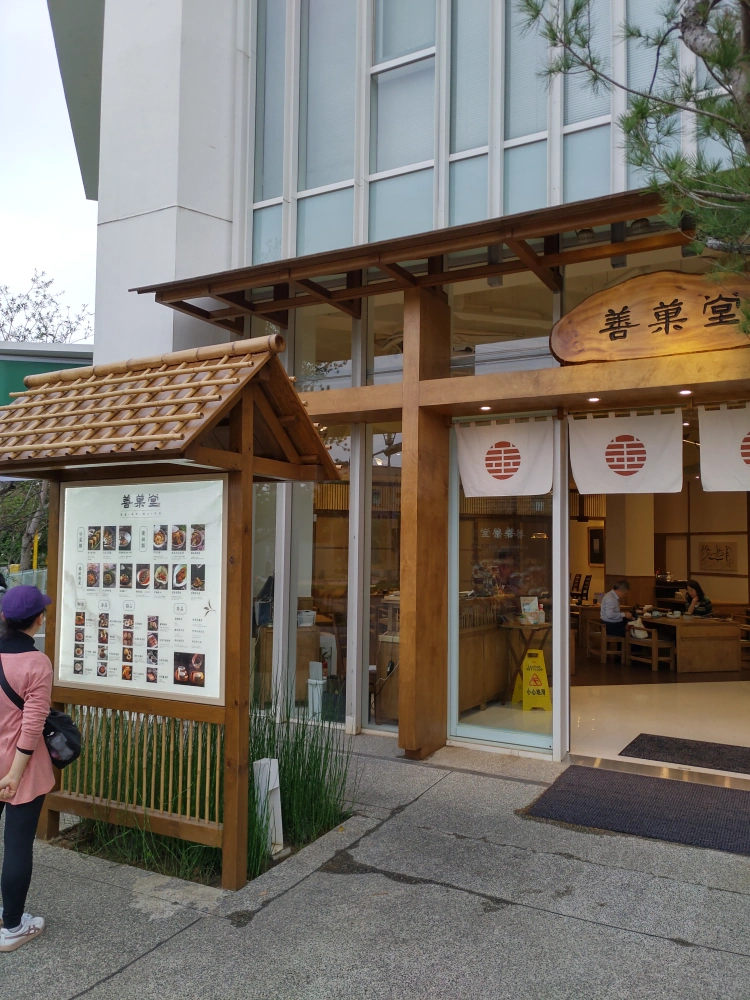
二訪拍的善菓堂 室內，當時是晚上了，人比較少。 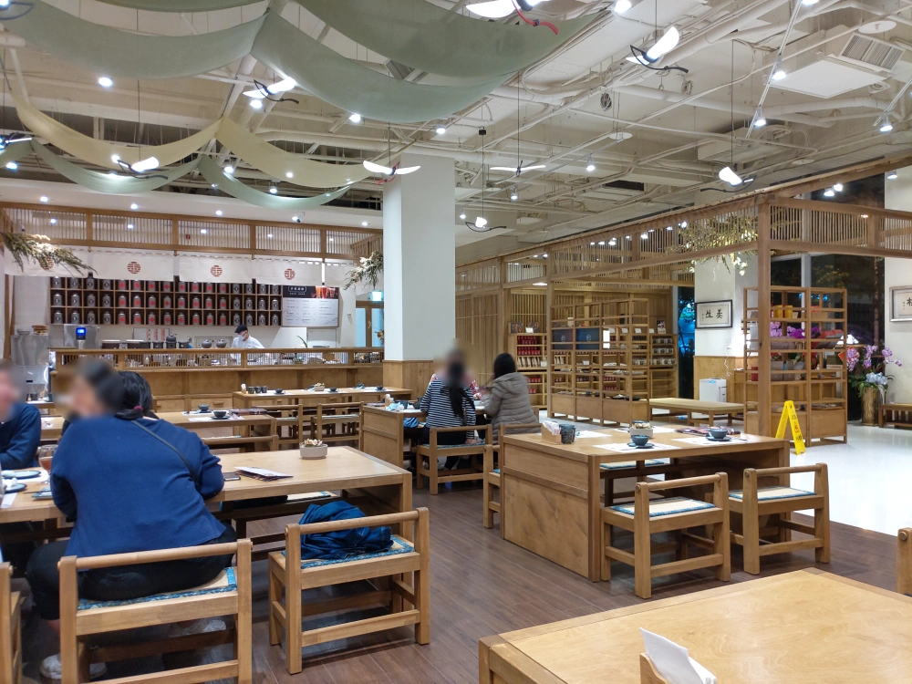
善菓堂的菜單，在它的官方粉絲頁，請各位前去閱覽，非常的清楚。
一訪單點了幾個菜，第一道是松露長青，應該是改自知名涼拌菜松柏長青，一樣是白菜切絲，但醬汁改成松露醬油， 今天這道菜是好吃，但味道有點重，吃到一半就決定打包回家自己加白菜，果然很成功地在家加大份量，吃的蠻開心的。 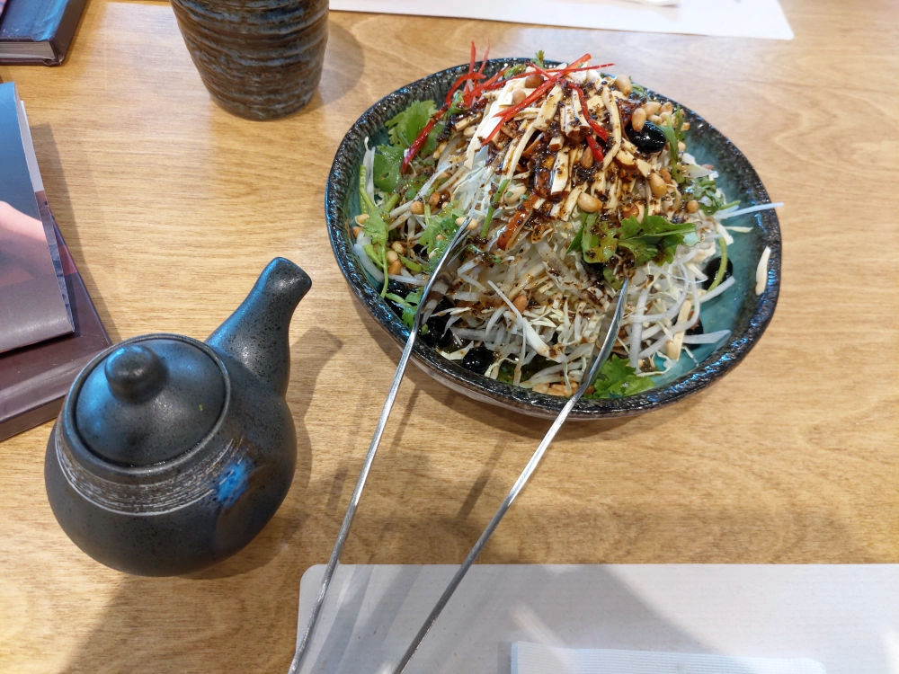
三絲炸春捲，內餡有芋泥，喜歡芋頭的應該會愛。 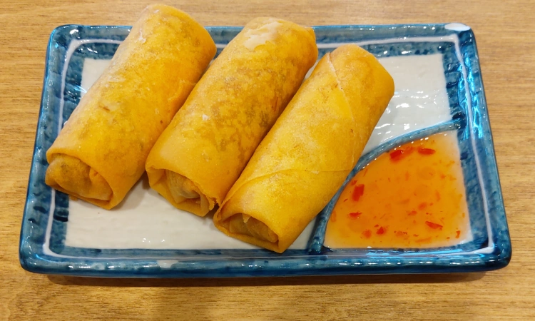
雪菜筍花豆腐煲，本貓覺得這是今天的第一名，那個醬汁超下飯的，光這道菜就能吃很多碗飯。 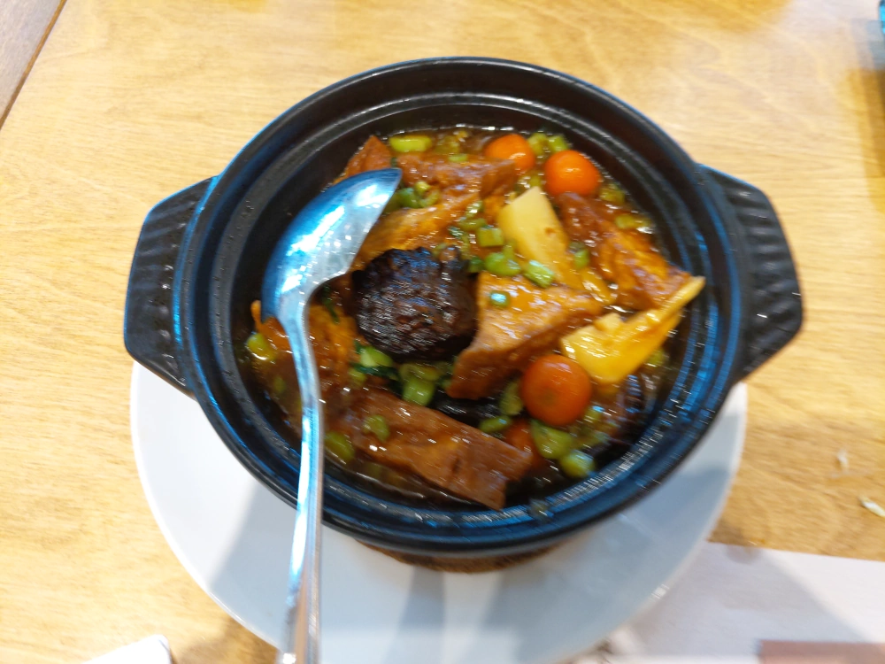
乾鍋雞，某種菇類當雞肉，加上薯條，一點腰果，調味已經請服務生弄小辣，但吃起來還是很辣。 薯條在這裡有點不知所云，不知道這配料有什麼意義。 最近幾年已經不太吃辣了，所以這道菜也是打包回家，配開水慢慢吃。 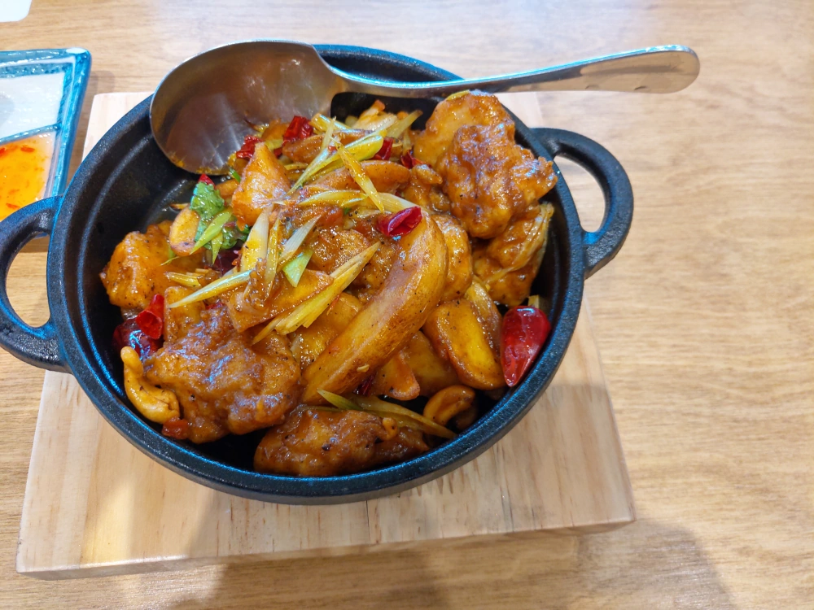
牛蒡飯，是用白米，而不是糯米做的。這裡飯的產品只有兩種，白飯與牛蒡飯，所以選牛蒡飯應該有趣一點吧。吃起來也不錯，有淡淡清香。 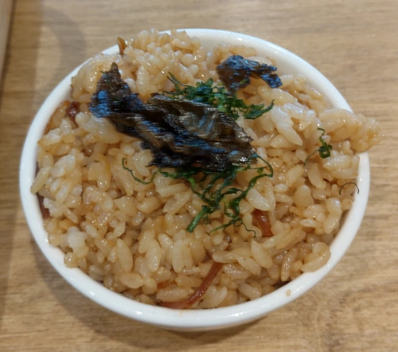
蘿蔔糕，很標準的一道菜，煎得外酥內嫩，水準很好。 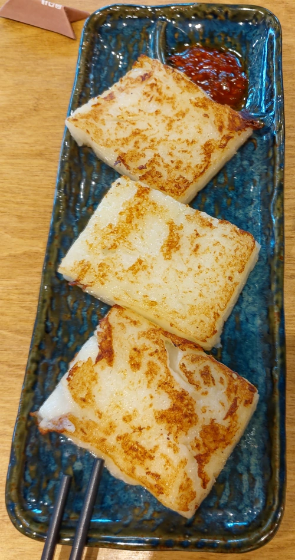
二訪就直接選雙人套餐了，看不清楚的話，請按滑鼠右鍵，選檢視圖片。 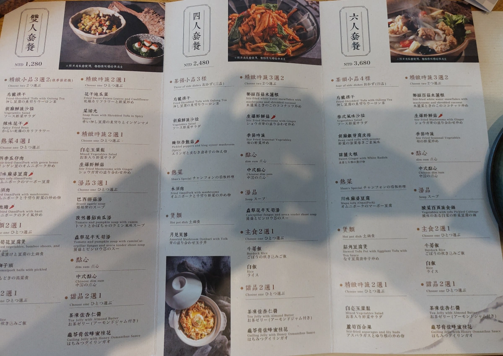
冷盤三選二 先選了 烏龍燻干，本以為干是指干絲，沒想到是腐皮切絲，加一點其他蔬菜的切絲，調味極好，整道菜很好吃。 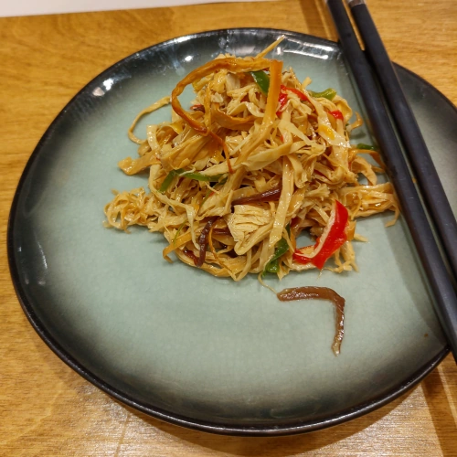
左邊是木須肉，所謂的木須，是因為清朝有太監，不能講蛋，只好講木樨花，因為一樣是黃色，久了就積非成是，從木樨變成木須了。 一般木須肉比較少用冬粉，這裡是素的木須肉，黑木耳絲、豆干絲一樣有，大概是因為不能放豬肉片了，所以改放冬粉。
右邊是 “菜掃光” ，應該是切碎的四季豆與豆乾，用辣椒炒在一起，還不錯吃。 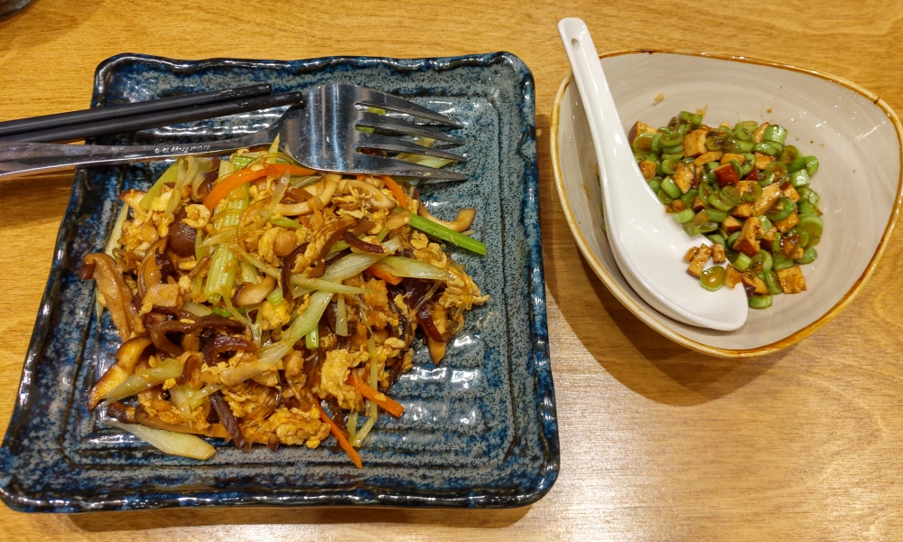
左邊還是雪菜筍花豆腐煲，因為太好吃了，所以雙人套餐再點一次，這次一樣好吃。這次雙人套餐一樣選牛蒡飯，就沒照了，配這些菜剛好。
右邊是 生爆野鮮菇，菇類跟豆干絲炒在一起，也是好吃。 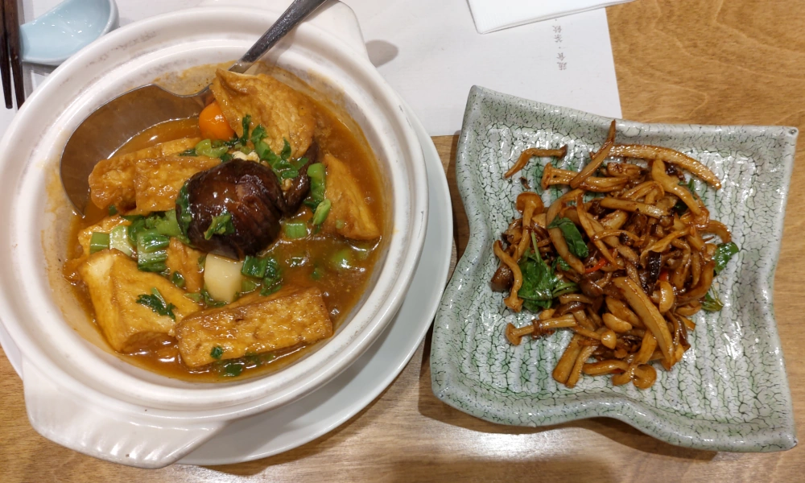
胡麻鮮蔬沙拉，冷盤三選二，因為不想選 辣味花干，就只好選這個，還不錯啦，跟好一點的西餐廳的生菜沙拉，似乎也差不多。 也許還是選 辣味花干 比較對，這裡得花干是指 花椰菜曬成的花干，不是豆類製品的蘭花干。 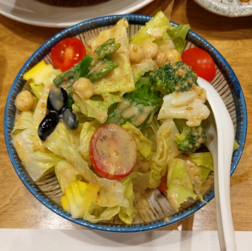
蟲草花半天筍湯，除了菜名當中兩個蔬菜，還有金針花等。現煮的，相當燙，喝起來還不錯。
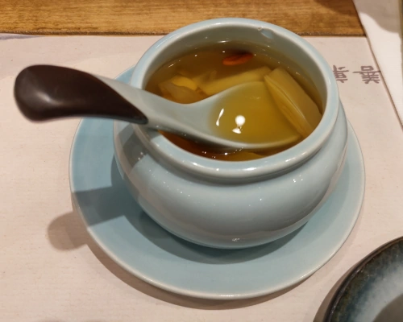
飯後甜點 芝麻球、桂花蜜龜苓膏。芝麻球現炸的，一樣很燙，咬下去就噴出熱空氣，正常好吃。
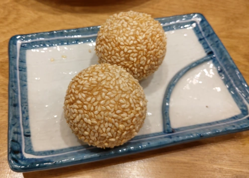
龜苓膏上面淋桂花蜜，所以有一些小小的桂花瓣。正常好吃。 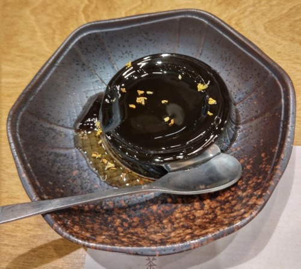
善菓堂 是精緻素菜，但不是純素，算蛋奶素吧。吃純素的朋友點菜時還是要問清楚。 整間餐廳很優秀，如果硬要挑剔，就是偏貴又份量少吧。 同時味道是調理得很好，裝潢禪風、氣派大方，很適合宴請賓客，如果有吃素的長輩、朋友， 帶到這裡用餐準沒錯。